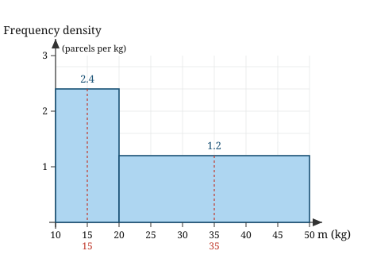

<script>if(location.hostname.endsWith('onrender.com'))location.replace('https://math-sandbox.pages.dev'+location.pathname+location.search+location.hash)</script>
<section class="theory" data-section="S1-1.3">
<h2>1.3 Representation of continuous data: histograms</h2>
<p class="src">Based on Cambridge International AS &amp; A Level Mathematics: Probability &amp; Statistics 1 Coursebook (Dean Chalmers), Chapter 1 Representation of data, printed pp.6–12 (Key point 1.3, Worked examples 1.2–1.3, Exercise 1B). Own wording and new numbers.</p>
<p class="key-words"><strong>Key words:</strong> <em>histogram</em>, <em>class boundary</em>, <em>class width</em>, <em>class mid-value</em>, <em>frequency density</em>, <em>class interval</em></p>
<h3>Class boundaries when values have been rounded</h3>
<p>Continuous data are recorded to a chosen degree of accuracy, such as to 3 significant figures or to the nearest centimetre. When those rounded values are put into classes such as 146–150, 151–155 and 156–160, a 1&nbsp;cm gap appears between the classes. The gap is only a result of the rounding: the underlying measurements are continuous, so the gap does not really exist.</p>
<p>Using \(h\) for height in centimetres, the actual classes are \(145.5\leqslant h\lt 150.5\), \(150.5\leqslant h\lt 155.5\) and \(155.5\leqslant h\lt 160.5\). The ends of these intervals are the <strong>class boundaries</strong>. The <strong>class width</strong> is the difference between the upper and lower class boundaries, so each of these three classes has width \(5\). The <strong>class mid-value</strong> (also called the midpoint) of a class is the mean of its two class boundaries, so the mid-values here are \(148\), \(153\) and \(158\).</p>
<p>A <strong>histogram</strong> is the usual diagram for grouped continuous data. It can also be used for grouped discrete data. When every class has the same width, a frequency diagram with column heights equal to the frequencies is already a histogram, because the column areas are then in the same ratio as the frequencies.</p>
<h3>Frequency density</h3>
<p>In a histogram, the area of a column represents the frequency of the corresponding class, so that area is proportional to frequency. This may be written “area \(\propto\) frequency”. The same ratio of areas to frequencies must hold even when the classes do not have equal widths.</p>
<p>There can be no gaps between the columns, because the upper boundary of one class is the lower boundary of the next class. A gap appears only if a class has frequency zero. The horizontal axis is a continuous number line, and the width of each column is the width of the class that it represents.</p>
<p>The height of a column is therefore not the frequency itself, unless every class happens to have width 1. The vertical axis is labelled <strong>frequency density</strong>, which measures frequency per standard interval. The usual standard interval is 1 unit of the horizontal variable.</p>
<p><strong>Key point.</strong> For a standard interval of 1 unit of measurement,
\[\text{frequency density}=\dfrac{\text{class frequency}}{\text{class width}},\]
which rearranges to
\[\text{class frequency}=\text{class width}\times\text{frequency density}.\]</p>
<p>Relative frequencies can be compared by comparing column areas. Estimates for part of a class assume that the values in the class are spread evenly over the whole <strong>class interval</strong>.</p>
<div class="worked-example">
<h4>Worked example 1: Class boundaries, widths and mid-values</h4>
<p class="src">Book: page 6 (heights to the nearest centimetre); new classes</p>
<p>The masses of some parcels, in grams, are given to the nearest \(10\) grams in the classes \(120\)–\(150\), \(160\)–\(180\) and \(190\)–\(240\). Write down the class boundaries, the class widths and the class mid-values.</p>
<ol class="steps">
<li>Because the masses are to the nearest \(10\) grams, each recorded value stands for an interval that runs \(5\) grams either side of the recorded figure. The classes are therefore \(115\leqslant m\lt 155\), \(155\leqslant m\lt 185\) and \(185\leqslant m\lt 245\). <span class="mark">B1</span></li>
<li>The class widths are \(155-115=40\), \(185-155=30\) and \(245-185=60\). The mid-values are \(\dfrac{115+155}{2}=135\), \(\dfrac{155+185}{2}=170\) and \(\dfrac{185+245}{2}=215\). <span class="mark">B1</span></li>
</ol>
<p class="final"><strong>Answer:</strong> boundaries \(115\), \(155\), \(185\) and \(245\); widths \(40\), \(30\) and \(60\); mid-values \(135\), \(170\) and \(215\)</p>
</div>
<div class="worked-example">
<h4>Worked example 2: Drawing a histogram and making an estimate</h4>
<p class="src">Book: Worked example 1.2, p.8; new table</p>
<p>The masses, \(m\)&nbsp;kg, of \(60\) parcels are grouped as follows.</p>
<table class="freq-table">
<thead><tr><th>Mass (\(m\) kg)</th><th>Number of parcels (\(f\))</th></tr></thead>
<tbody>
<tr><td>\(10\leqslant m\lt 20\)</td><td>24</td></tr>
<tr><td>\(20\leqslant m\lt 50\)</td><td>36</td></tr>
</tbody>
</table>
<p>Illustrate the data in a histogram, and estimate the number of parcels with masses between \(15\)&nbsp;kg and \(35\)&nbsp;kg.</p>
<ol class="steps">
<li>The class widths are \(10\) and \(30\). The frequency densities are \(24\div 10=2.4\) and \(36\div 30=1.2\), in parcels per kilogram. The histogram has no gaps. <span class="mark">M1 A1</span></li>
<li>The interval from \(15\) to \(20\) is half of the first class, so it accounts for \(\dfrac{1}{2}\times 24=12\) parcels. The interval from \(20\) to \(35\) has width \(15\), so the estimate from the second class is \(15\times 1.2=18\). The total estimate is \(12+18=30\) parcels. <span class="mark">M1 A1</span></li>
</ol>
<p></p>
<script src="../../assets/widget-kinds-pkg12.js"></script>
<div class="ms-widget" data-widget="histogram"><p class="ms-widget-fallback">Interactive figure: class widths and frequency density, with the modal class marked.</p></div>

<p class="final"><strong>Answer:</strong> the histogram above; \(30\) parcels</p>
</div>
<p>The class with the highest frequency need not have the highest frequency density: a wide class can have a large frequency but a short column. Always use the class boundaries, not the rounded class labels, when the widths are calculated. The axis scales should be easy to read (for example \(1\), \(2\) or \(5\) units to \(1\)&nbsp;cm), and a squiggle may be used on an axis if a range of unused values has been omitted.</p>
<h3>Common mistakes</h3>
<ul>
<li>Using the frequency as the column height when the classes have unequal widths.</li>
<li>Taking the class width from the rounded labels (for example treating \(60\)–\(62\) as width \(2\) instead of using the boundaries \(59.5\) and \(62.5\)).</li>
<li>Leaving gaps between columns when no class has frequency zero.</li>
<li>Assuming that the tallest column is automatically the class with the most data.</li>
</ul>
<h3>Quick checks</h3>
<div class="quick-check">
<h4>Quick check 1</h4>
<p>A class has \(20\leqslant m\lt 28\) and contains \(24\) observations. What is the frequency density?</p>
<details><summary>Worked solution</summary>
<p>The class width is \(8\), so the frequency density is \(24\div 8=3\).</p>
</details>
</div>
<div class="quick-check">
<h4>Quick check 2</h4>
<p>A histogram column has frequency density \(3\) and class width \(10\). How many observations does the column represent?</p>
<details><summary>Worked solution</summary>
<p>Frequency \(=\) width \(\times\) frequency density \(=10\times 3=30\).</p>
</details>
</div>
<div class="quick-check">
<h4>Quick check 3</h4>
<p>A class \(20\leqslant x\lt 40\) contains \(48\) observations, assumed spread evenly through the class. Estimate the number of observations with \(20\leqslant x\lt 25\).</p>
<details><summary>Worked solution</summary>
<p>The required interval is a quarter of the class, so the estimate is \(\dfrac{5}{20}\times 48=12\).</p>
</details>
</div>
<p class="marks-key">B marks are for a correct statement; M marks are for a correct method; A marks are for an accurate result.</p>
</section>
